Proyecto integrador · Ingeniería Web I
Lumen: Biblioteca Virtual Comunitaria
Documentación técnica de una interfaz web responsiva para consultar el catálogo, reservar libros y conocer la agenda cultural de una biblioteca de barrio.
Documentación técnica de una interfaz web responsiva para consultar el catálogo, reservar libros y conocer la agenda cultural de una biblioteca de barrio.
Este documento describe el desarrollo de Lumen, un sitio web para una biblioteca comunitaria construido como proyecto integrador del curso Ingeniería Web I. El sitio reúne en una sola interfaz el catálogo de libros con su disponibilidad, un formulario de reserva de préstamos, la agenda de eventos culturales y la información de contacto de la biblioteca.
El proyecto aplica lo visto en el curso: estructura semántica con HTML5, presentación con CSS3 (Flexbox, CSS Grid, variables y transiciones), diseño responsivo con enfoque mobile-first y media queries, y una capa de interacción con JavaScript sin librerías externas. El sitio fue probado en tres tamaños de pantalla (computador, tableta y teléfono) y en este documento se presentan las evidencias.
En muchas bibliotecas de barrio y municipales la información para los usuarios está dispersa: el catálogo solo se puede consultar en el mostrador, los horarios se publican en carteleras físicas y los eventos se anuncian por grupos de mensajería que no llegan a todos. Esto genera tres problemas concretos:
La mayoría de los usuarios de la biblioteca tiene un teléfono inteligente, pero no existe un canal digital que les permita resolver estas necesidades por su cuenta. Una interfaz web es la opción más accesible: no requiere instalar una aplicación, funciona en cualquier navegador y se adapta al tamaño de pantalla del dispositivo.
Con un catálogo consultable, la posibilidad de apartar un libro y una agenda visible, se reducen los desplazamientos innecesarios, aumenta la participación en actividades culturales y el personal puede dedicar más tiempo a la atención presencial. Además, el proyecto permite aplicar de forma integrada los contenidos del curso sobre una necesidad real.
Desarrollar una interfaz web funcional, estructurada, atractiva y responsiva para la biblioteca comunitaria Lumen, que permita a los usuarios consultar el catálogo, reservar préstamos y conocer la agenda cultural desde un computador, una tableta o un teléfono móvil, aplicando buenas prácticas de HTML5 y CSS3.
| Segmento | Necesidad principal | Cómo lo atiende el sitio |
|---|---|---|
| Estudiantes de colegio y universidad (14 a 25 años) | Saber si un libro está disponible y apartarlo. | Catálogo con filtros y botón «Reservar». |
| Padres y madres de familia | Actividades para sus hijos y libros infantiles. | Filtro de eventos por público y categoría «Infantil». |
| Adultos y adultos mayores | Horarios, trámites y alfabetización digital. | Tipografía grande, botones amplios, horario con el día actual resaltado. |
| Personal de la biblioteca | Reducir consultas repetidas. | Preguntas frecuentes y datos de contacto visibles. |
Lumen es un sitio web estático de cuatro páginas enlazadas entre sí mediante un menú principal. Cada página atiende una necesidad de la problemática:
| Página | Propósito | Funcionalidades principales |
|---|---|---|
index.htmlInicio | Presentar la biblioteca y llevar al usuario a las acciones clave. | Búsqueda rápida, indicadores animados, servicios, libros destacados, testimonios, preguntas frecuentes desplegables y llamado a la acción. |
catalogo.htmlCatálogo | Consultar libros y su disponibilidad. | Búsqueda en vivo por título o autor, filtro por categoría y disponibilidad, ordenamiento, ventana modal con el detalle y botón «Avisarme» para libros prestados. |
eventos.htmlEventos | Dar a conocer la agenda cultural y los espacios. | Filtro por público, agenda personal («Guardar en mi agenda»), galería con visor ampliado y video de recorrido. |
reservas.htmlReservas y contacto | Apartar un libro y encontrar la biblioteca. | Formulario validado, lista «Mis reservas» con opción de cancelar, horario con el día actual resaltado, datos de contacto y mapa. |
localStorage. Al ser un proyecto de interfaz (front-end), no se envían datos a un servidor; la estructura queda lista para conectarse a un servicio real en una siguiente etapa.Proyecto-Integrador-Web-I/ ├── index.html Página de inicio ├── catalogo.html Catálogo con filtros y detalle ├── eventos.html Agenda cultural, galería y video ├── reservas.html Formulario de reserva, horario y contacto ├── css/ │ └── styles.css Hoja de estilos única (mobile-first) ├── js/ │ └── main.js Interacciones (JavaScript sin librerías) ├── img/ Logo, ilustraciones y portadas (SVG) │ ├── libros/ 12 portadas de libros │ ├── eventos/ 4 imágenes de eventos │ └── galeria/ 6 imágenes de espacios ├── media/ Video del recorrido (MP4) y póster ├── docs/ │ ├── Documentacion-Proyecto-Lumen.pdf │ ├── evidencias/ Capturas en computador, tableta y móvil │ └── fuente/ Fuente HTML de este documento └── README.md
Todas las páginas comparten la misma estructura base para que la navegación sea predecible:
┌──────────────────────────────────────────────────────────┐
│ <header> Logo · <nav> menú principal · tema · ☰ (móvil) │
├──────────────────────────────────────────────────────────┤
│ <main> │
│ Encabezado de página (título, ruta de navegación) │
│ <section> contenido 1 (tarjetas en CSS Grid) │
│ <section> contenido 2 (formulario, galería, FAQ…) │
│ <dialog> ventanas modales (detalle / visor) │
├──────────────────────────────────────────────────────────┤
│ <footer> Descripción · navegación · horario · contacto │
└──────────────────────────────────────────────────────────┘
Inicio ──┬── Catálogo ──(Reservar)──► Reservas y contacto
├── Eventos
└── Reservas y contacto
Los enlaces entre páginas transportan contexto: la búsqueda rápida del inicio abre el catálogo ya filtrado (catalogo.html?q=…) y el botón «Reservar» de un libro abre el formulario con ese libro preseleccionado (reservas.html?libro=…).
| Tecnología | Uso en el proyecto |
|---|---|
| HTML5 | Estructura semántica, formularios con validación nativa, <dialog>, <details>, <video>. |
| CSS3 | Variables, Flexbox, CSS Grid, media queries, clamp(), transiciones y tema oscuro. |
| JavaScript (ES6+) | Menú móvil, filtros, modales, validación, almacenamiento local. |
| SVG | Logo, ilustraciones, portadas y mapa: imágenes livianas que se ven nítidas en cualquier pantalla. |
| Google Fonts | Tipografías Fraunces (títulos) y Nunito Sans (texto). |
| Git y GitHub | Control de versiones y entrega del repositorio. |
| Visual Studio Code / Microsoft Edge DevTools | Edición de código y pruebas en distintas resoluciones. |
Cada página declara <!DOCTYPE html>, el idioma (lang="es"), codificación UTF-8, la etiqueta viewport necesaria para el diseño responsivo y una meta descripción. La estructura usa elementos semánticos en lugar de <div> genéricos:
| Elemento | Dónde se usa |
|---|---|
<header>, <nav>, <main>, <footer> | Encabezado con menú principal, contenido principal y pie de página en todas las páginas. |
<section> + aria-labelledby | Cada bloque temático (servicios, destacados, FAQ, galería…) asociado a su título. |
<article> | Tarjetas independientes: libros, servicios y eventos. |
<aside> | Panel «Mis reservas» complementario al formulario. |
<figure>, <figcaption> | Ilustración principal, mapa, video y visor de la galería. |
<dl>, <dt>, <dd> | Indicadores numéricos y ficha técnica del libro. |
<blockquote> | Testimonios de lectores. |
<details>, <summary> | Preguntas frecuentes desplegables sin JavaScript. |
<dialog> | Ventana modal de detalle del libro y visor de imágenes. |
<table>, <caption>, <th scope> | Horario de atención. |
<video> con poster | Recorrido por las instalaciones. |
<address>, <time> | Datos de contacto y fechas de eventos. |
<form>, <fieldset>, <legend>, <label> | Formulario de reserva agrupado en «Datos del lector» y «Detalle de la reserva». |
El formulario aprovecha los tipos de entrada de HTML5 (email, tel, date, search) y los atributos de validación required, pattern, minlength, maxlength, min y max. Los atributos autocomplete e inputmode facilitan el llenado en el celular (por ejemplo, el documento abre el teclado numérico).
alt="".aria-expanded y aria-controls; la página actual se marca con aria-current="page".aria-live para que los lectores de pantalla los anuncien.:focus-visible) y soporte de prefers-reduced-motion.Todo el estilo está en un solo archivo, css/styles.css, organizado en 12 bloques comentados (variables, base, botones, encabezado, hero, tarjetas, catálogo, galería, formularios, FAQ, pie de página y media queries). Se usa una nomenclatura tipo BEM (.card__body, .btn--primary) para que las clases sean fáciles de leer.
:root {
--color-ink: #14403f; --color-amber: #e8a33d;
--color-paper: #fbf7ee; --radius: 1rem;
--font-title: "Fraunces", Georgia, serif;
}
:root[data-theme="dark"] { --color-paper: #0f1717; --color-text: #e9efe9; }
Los colores, radios, sombras y tipografías se definen una sola vez. Gracias a esto, el tema oscuro solo redefine las variables y toda la interfaz cambia sin duplicar reglas.
Se usa para alinear elementos en una dimensión: barra de encabezado (logo, menú y botones), grupos de botones, filtros tipo «chip», pie de las tarjetas, elementos de la lista de reservas y la columna interna de cada tarjeta (flex-direction: column con margin-top: auto para alinear los botones al final).
Se usa para los diseños en dos dimensiones:
grid-template-columns: repeat(auto-fill, minmax(min(100%, 10rem), 1fr)).1.1fr 0.9fr) y secciones de dos columnas en reservas y eventos.grid-column: span 2; grid-row: span 2).clamp(), por ejemplo font-size: clamp(2rem, 6vw, 3.5rem).min(): width: min(100% - 2rem, 72rem).aspect-ratio y object-fit: cover para que portadas e imágenes mantengan su proporción.linear-gradient, radial-gradient), sombras y backdrop-filter en el encabezado fijo (position: sticky).::after, ::backdrop) para el ícono «+» de las preguntas frecuentes y el fondo de las ventanas modales.El sitio se diseñó con enfoque mobile-first: los estilos base corresponden al teléfono y las media queries con min-width agregan columnas y espacio a medida que crece la pantalla. Los puntos de quiebre se expresan en em para que respeten el tamaño de letra configurado por el usuario.
| Rango | Media query | Cambios principales |
|---|---|---|
| Teléfono (< 480 px) | Estilos base | Una columna; menú hamburguesa desplegable; libros en 2 columnas; botones de ancho cómodo para el dedo (mín. 44 px de alto). |
| Teléfono grande (≥ 480 px) | (min-width: 30em) | Indicadores en 4 columnas; modal de detalle con portada al lado del texto. |
| Tableta (≥ 768 px) | (min-width: 48em) | Hero en dos columnas; filtros en una fila; destacados en 4 columnas; galería en 3; campos del formulario en pares; pie de página en 3 columnas. |
| Computador (≥ 1024 px) | (min-width: 64em) | Menú horizontal visible (se oculta la hamburguesa); reservas y eventos en dos columnas; galería tipo mosaico; pie de página en 4 columnas. |
auto-fill y minmax() que cambian el número de columnas sin media queries adicionales.rem, em, %, vw, vh y fr en lugar de píxeles fijos.max-width: 100%; height: auto, atributos width/height para evitar saltos de contenido, carga diferida (loading="lazy") e imágenes vectoriales SVG.| Funcionalidad | Página | Propósito dentro de la solución |
|---|---|---|
| Menú hamburguesa | Todas | Navegar en pantallas pequeñas sin ocupar espacio; se cierra con la tecla Esc o al elegir una opción. |
| Tema claro/oscuro | Todas | Lectura cómoda de noche; la preferencia se recuerda. |
| Búsqueda rápida | Inicio | Buscar un libro desde la portada y llegar al catálogo ya filtrado. |
| Indicadores animados | Inicio | Mostrar el alcance de la biblioteca; los números cuentan al aparecer en pantalla. |
| Preguntas frecuentes desplegables | Inicio | Resolver dudas comunes sin llamar a la biblioteca. |
| Búsqueda en vivo, filtros y orden | Catálogo | Encontrar libros por texto, categoría y disponibilidad; muestra el número de resultados o un mensaje si no hay coincidencias. |
| Ventana de detalle | Catálogo | Ver descripción, autor, año y páginas antes de reservar. |
| «Avisarme» | Catálogo | Marcar libros prestados que interesan al lector. |
| Filtro por público y agenda personal | Eventos | Encontrar actividades adecuadas y guardarlas; los eventos guardados quedan resaltados. |
| Galería con visor | Eventos | Conocer los espacios; permite avanzar y retroceder con botones o flechas del teclado. |
| Video del recorrido | Eventos | Recurso multimedia para conocer la biblioteca antes de ir. |
| Formulario de reserva validado | Reservas | Apartar un libro: valida nombre, documento (6-10 dígitos), celular (10 dígitos que empiezan por 3), correo, libro, fecha (hoy a 30 días, sin domingos) y aceptación del reglamento, con mensajes claros en español. |
| Mis reservas | Reservas | Consultar el código de la reserva y cancelarla. |
| Horario con el día actual | Reservas | Saber de un vistazo si la biblioteca está abierta hoy. |
| Botón «volver arriba» | Todas | Regresar al inicio de páginas largas en el celular. |
Las pruebas se hicieron con Microsoft Edge y su modo de emulación de dispositivos en tres resoluciones: computador 1440×900, tableta 768×1024 y teléfono 390×844. Además de la revisión visual se automatizaron las interacciones principales:
| Prueba | Resultado esperado | Resultado |
|---|---|---|
| Abrir el menú en el teléfono | El menú se despliega y el botón indica «abierto». | Correcto |
| Buscar «garcia» desde el inicio | El catálogo muestra 1 libro (sin importar tildes). | Correcto |
| Filtrar por la categoría Ciencia | Se muestran 2 libros. | Correcto |
| Buscar un texto inexistente | Aparece el mensaje «No encontramos libros…». | Correcto |
| Abrir el detalle de un libro | La ventana modal muestra los datos del libro. | Correcto |
| Guardar dos eventos | «Tienes 2 eventos guardados» y tarjetas resaltadas. | Correcto |
| Enviar el formulario vacío | 7 campos marcados con error y mensajes explicativos. | Correcto |
| Reservar desde «Reservar» de Cosmos | El libro llega preseleccionado; al enviar aparece el código y la reserva en «Mis reservas». | Correcto |
| Consola del navegador | Sin errores de JavaScript ni recursos faltantes. | Correcto |
| Problema | Dispositivo | Corrección |
|---|---|---|
| Las barras del ícono hamburguesa quedaban muy separadas y al abrir formaban «>» en vez de «✕». | Teléfono / tableta | El botón pasó a usar Flexbox en columna centrada para que las tres barras queden juntas y roten correctamente. |
| Las portadas del catálogo se veían demasiado grandes (solo 2 por fila). | Tableta | Se creó la clase .grid--books con columnas mínimas de 10-11 rem. |
| El formulario en dos columnas quedaba muy angosto. | Tableta | La distribución en dos columnas se movió al punto de quiebre de computador (64em). |
| La última imagen de la galería quedaba sola en una fila. | Computador | El mosaico pasó de 4 a 3 columnas para completar las 9 celdas. |
| Las tarjetas filtradas seguían visibles. | Todos | Se agregó [hidden] { display: none !important; }, porque display: flex anulaba el atributo hidden. |
Las capturas completas de cada página en los tres dispositivos están en la carpeta docs/evidencias del repositorio. A continuación se presentan las principales.
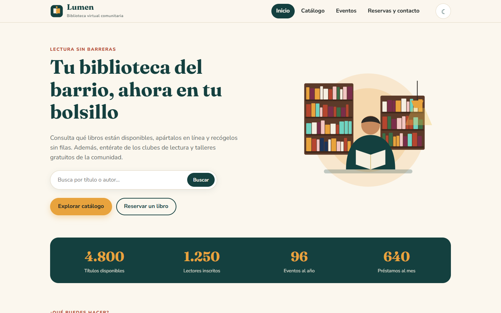
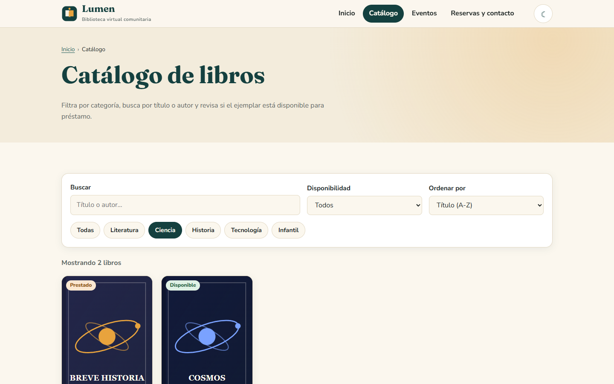
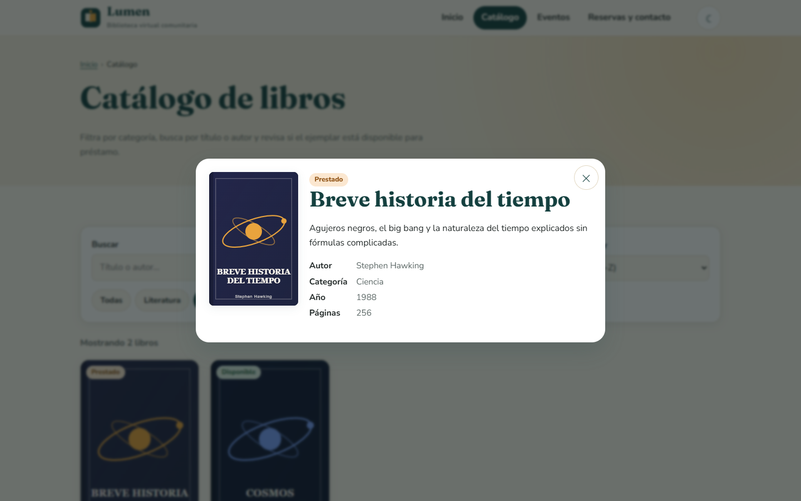
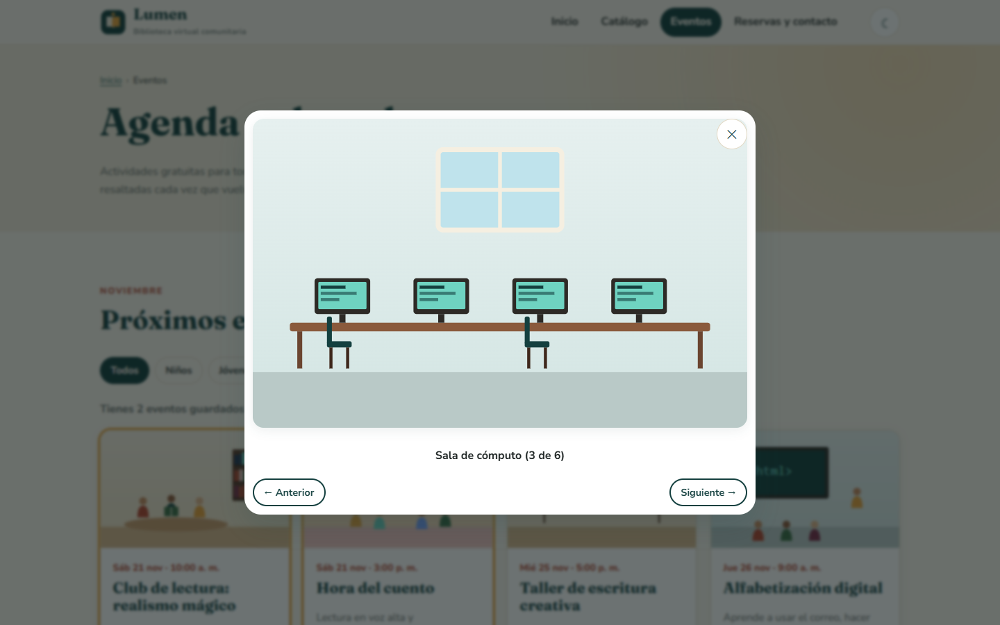
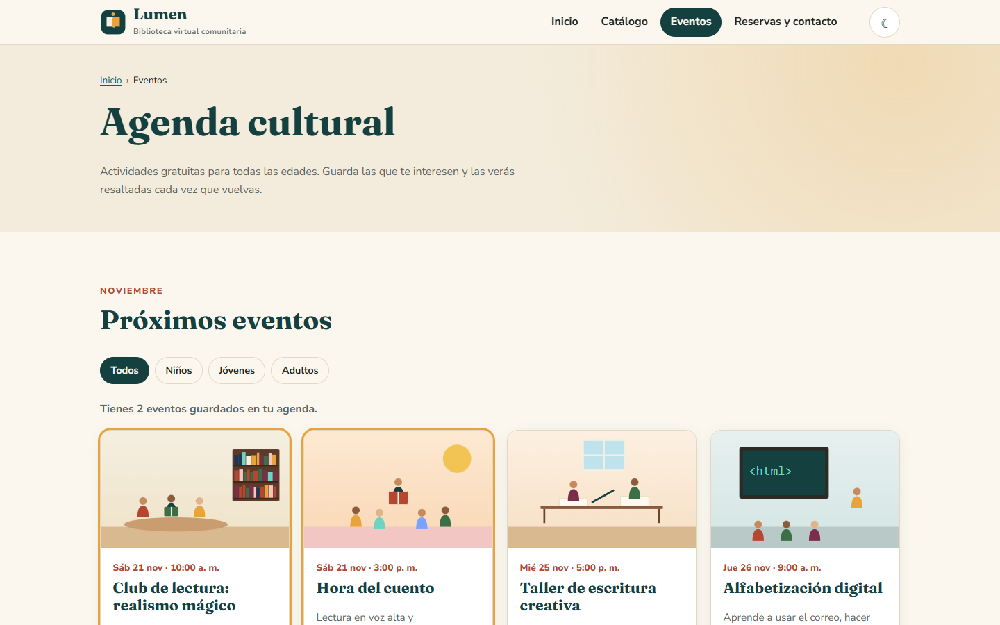
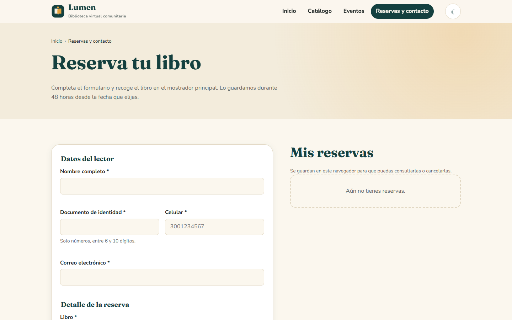
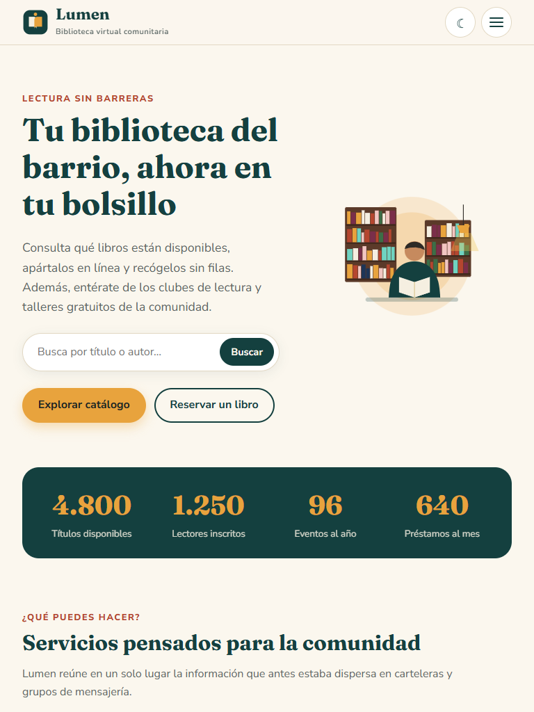
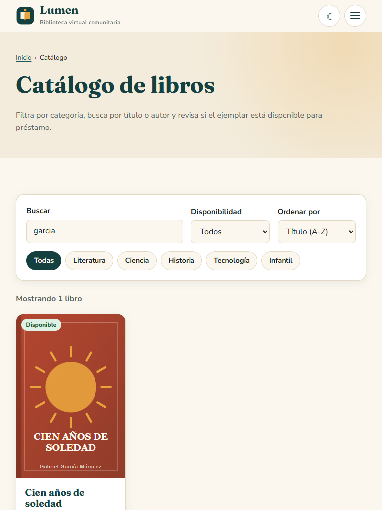
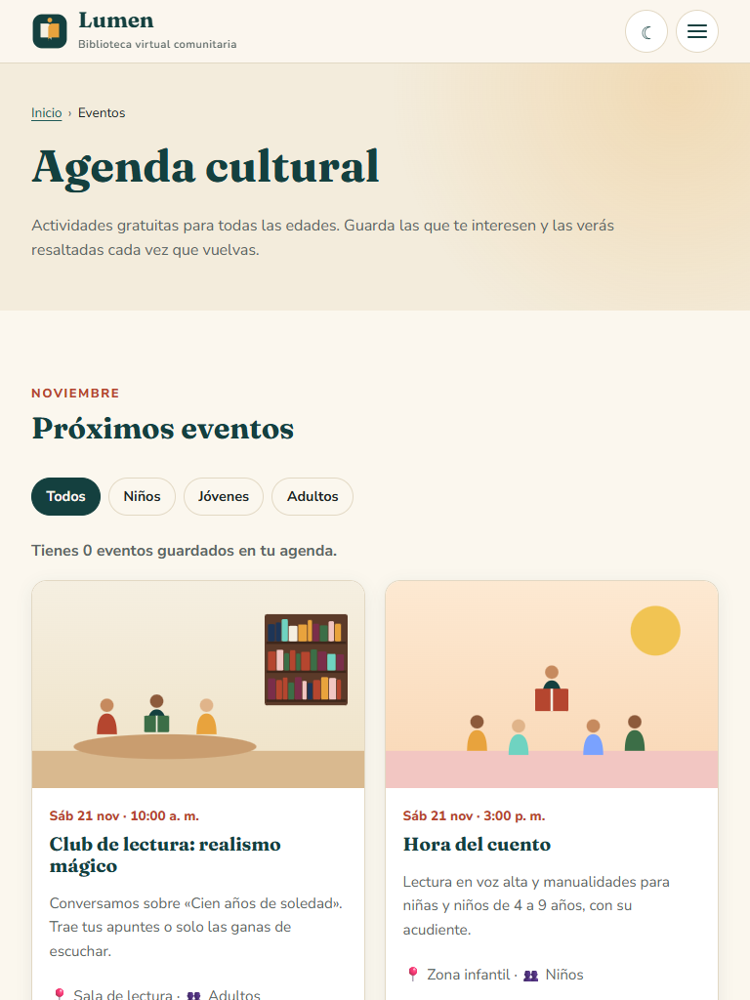
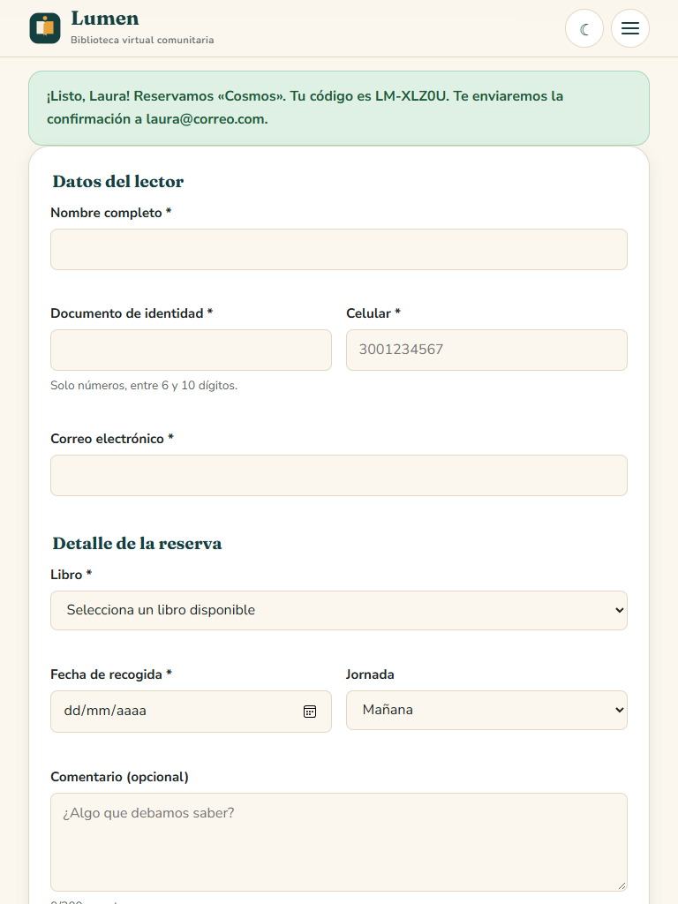
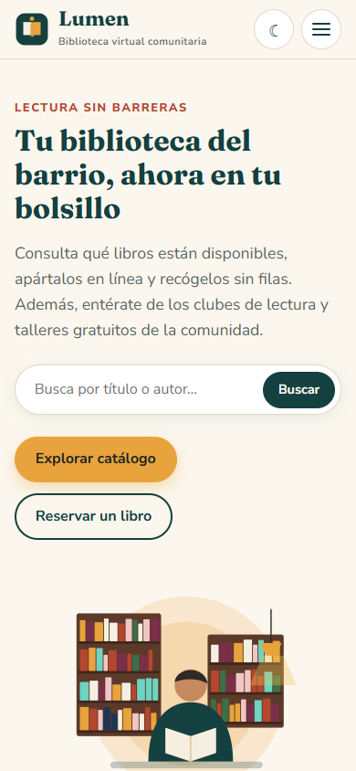
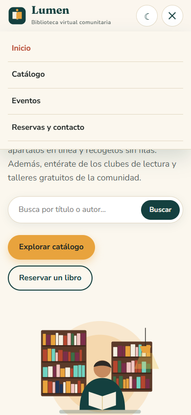
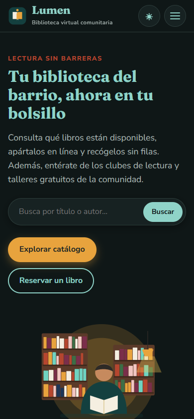
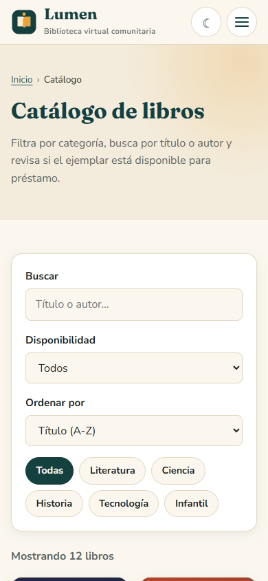
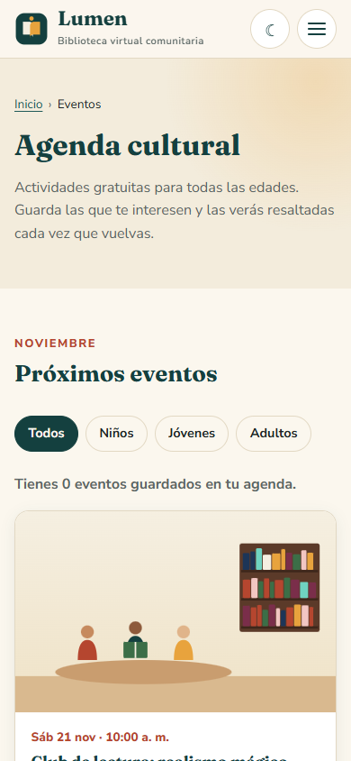
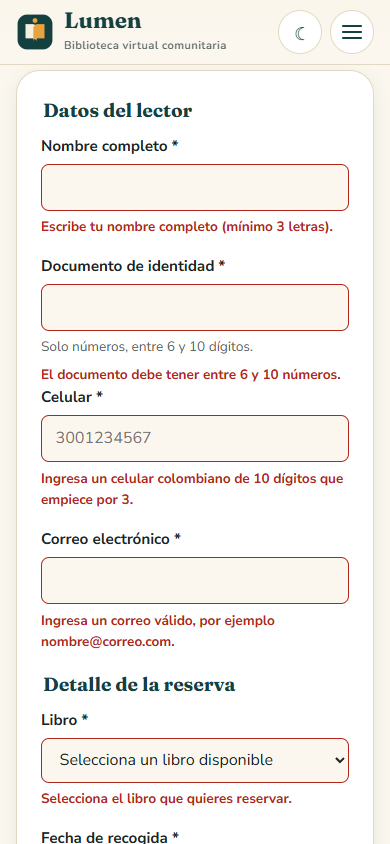
En las tres resoluciones la interfaz conserva su estructura, el texto sigue siendo legible sin hacer zoom, no aparece desplazamiento horizontal y todas las funciones (menú, filtros, modales, formulario) responden igual.
<details> y <dialog> resolvieron interacciones que antes requerían mucho JavaScript.